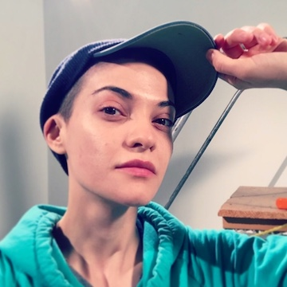

About the course
Introduction to Cinema Production is a course that introduces the basics of filmmaking. The course has taught me how to properly work a DSLR camera, use an audio mixer, and appropriately utilize Adobe Premier to create a short film. The hands on nature of the course has allowed me to quickly learn and adapt to the filmmaking process. With guest lectures and interactive activities, I have been able understand and use the complex equipment within a short period of time.
My Professor
My professor for this class is Ms. Laura Iancu. Ms. Iancu has received her Masters in Fine Art Photography and Masters in Fine Art FIlm and Video Production from the University of Iowa. She is from Romania and has found successful creating short films in the United States. Her go-to filmmaking style is experimental, as she finds the odd and unusual side of cinema to be intriguing. Her inspiration for her films stems from Japanese animation, video games, and poetry. She is a unique individual in that her style of filmmaking can be created from anything in her surroundings. Whether it is nature or a blade of grass, she can create a whole film from simply aspects in life that seem miniscule to the untrained eye. Her passion for filmmaking has helped her carry her students to their full potential. With the amount of details that carry into being a filmmaker she has been able to relay the important and vital information to her students.
My Opinion
I have always enjoyed the power of movies and the messages they convey. Last year, I took Intro to Cinema and fell in love with the class. The professor was passionate about the process of filmmaking and the specifics behind why a movie was made the way it was. When I decided to take Introduction to Cinema Production, I thought it would be a continuation of the class I took a year ago. While the content has been different I still like the class. While I had high hopes for this class, it has been different than what I expected it to be. I like the hands on aspect to the class, because I think it is beneficial for me to know how all the cameras and equipment work. The issue with the class for me personally is the lack of structure in the class. My disconnect with the class is caused mainly by the method in which the class is taught. I simply expected more instruction and direction in the class, whereas it is laid back to the point where it is a flaw. Nonetheless, I have still learned a lot about cinema production and will use the skills I acquired from this class in my future cinema courses.
